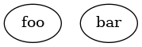

Nodes
Different methods are available on the graph objects to create a node.
Creating a single node
You can simply call node with the identifier of the node you want to create:
$graph = new Graphviz\Digraph();
$graph->node('foo');
This method returns the Graph object, so you can chain multiple calls:
$graph = new Graphviz\Digraph();
$graph
->node('foo')
->node('bar')
;

Passing attributes to a node
To provide attributes to a node, pass them as a second array to this method with an association between the parameter names and the parameter values:
$graph = new Graphviz\Digraph();
$graph->node('foo', [
'shape' => 'record',
'label' => 'This is the label of the node'
]);
Creating multiple nodes
A method named nodes is available for you to create multiple nodes at once:
$graph = new Graphviz\Digraph();
$graph->nodes(['foo', 'bar', 'baz']);
You can pass attributes to a node by providing it an associative array:
$graph = new Graphviz\Digraph();
$graph->nodes([
'foo',
'bar' => ['shape' => 'record'],
'baz',
]);
The Node object
The node method is fluid, meaning it returns the Graph object so that you
can chain multiple calls. But you can also call the beginNode method, so
that you have the object for manipulation:
$graph = new Graphviz\Digraph();
$node = $graph->beginNode('foo');
# Set a value
$node->attribute('shape', 'record');
$node->attribute('label', 'This is the label');
# Get a value
$value = $node->getAttribute('shape');
Accessing an existing Node object
If you already added a Node to your graph, you can access it, given you have
its identifier, using the get method:
$graph = new Graphviz\Digraph();
$graph->node('foo');
$foo = $graph->get('foo');
$foo->attribute('shape', 'record');